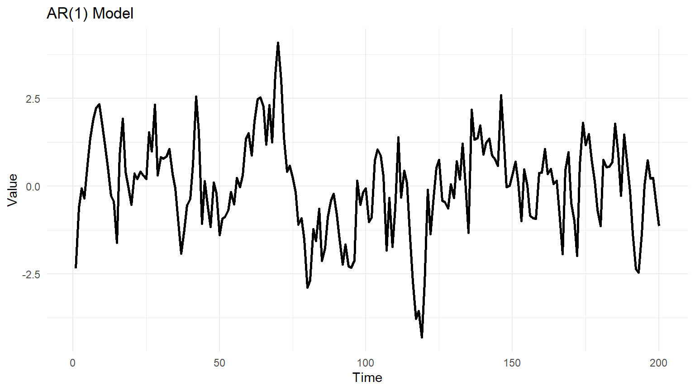

# Load necessary libraries
library(tidyverse)
library(forecast)
library(ggplot2)
# Set parameters
phi <- 0.8
n <- 200
# Simulate AR(1) data
set.seed(123)
ar1_data <- arima.sim(model = list(ar = phi), n = n)
# Create a time series plot
ggplot(data.frame(Time = 1:n, Value = ar1_data), aes(x = Time, y = Value)) +
geom_line(linewidth=1) +
labs(title = "AR(1) Model", x = "Time", y = "Value") +
theme_minimal()